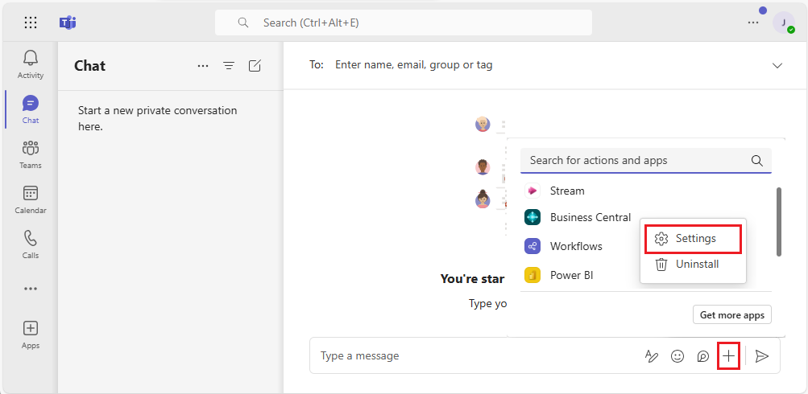
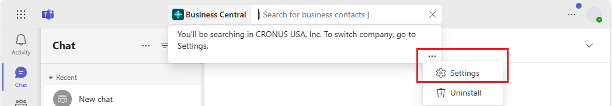

Ändern der Firma und anderer Einstellungen in Teams
GILT FÜR: Business Central Online
Die Business Central-App für Teams enthält die Seite Einstellungen, auf der Sie Informationen zu Ihrer Verbindung zu Business Central anzeigen und ändern können. Zum Beispiel wechseln Sie die Business Central Umwelt und das Unternehmen, mit denen Sie verbunden sind. Sie können auch sehen, mit welchem Konto Sie auf Business Central zugreifen, und melden Sie sich bei Bedarf ab und wieder an.
Es gibt zwei Möglichkeiten, die Seite Einstellungen zu öffnen: 1) Vom Feld zum Erstellen von Nachrichten oder 2) aus dem Befehlsfeld.
Klicken Sie neben dem Feld zum Verfassen von Nachrichten, Auswählen +, mit der rechten Maustaste auf das Business Central App-Symbol und dann auf Auswählen Einstellungen.

Suchen Sie im Befehlsfeld oben nach /Business Central und dann nach Auswählen, dem Business Central App-Symbol. Geben Sie anschließend in der angezeigten Meldung unter dem Feld [Nach Geschäftskontakten suchen] Auswählen … (Weitere Optionen) und dann Einstellungen ein. Falls die Nachricht nicht angezeigt wird, klicken Sie auf das Kästchen [Nach Geschäftskontakten suchen] .

Ähnliche Informationen
Übersicht über die Integration von Business Central und Microsoft Teams
Die App Business Central für Microsoft Teams installieren
Suchen Sie nach Debitoren, Kreditoren und anderen Kontakten aus Microsoft Teams
Datensätze in Microsoft Teams freigeben
Teams FAQ
Teams Problembehebung
Entwickeln für Teams Integration
Starten Sie eine kostenlose Testversion!
Kostenlose E-Learning-Module für Business Central finden Sie hier